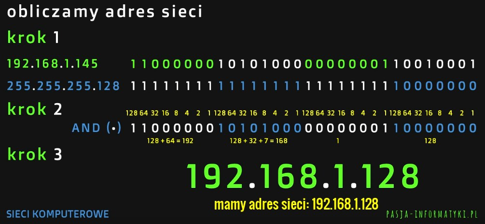
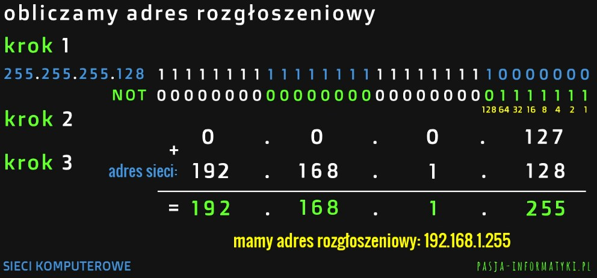
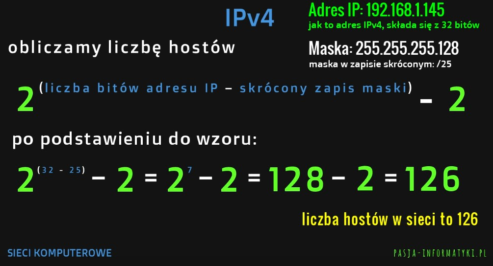
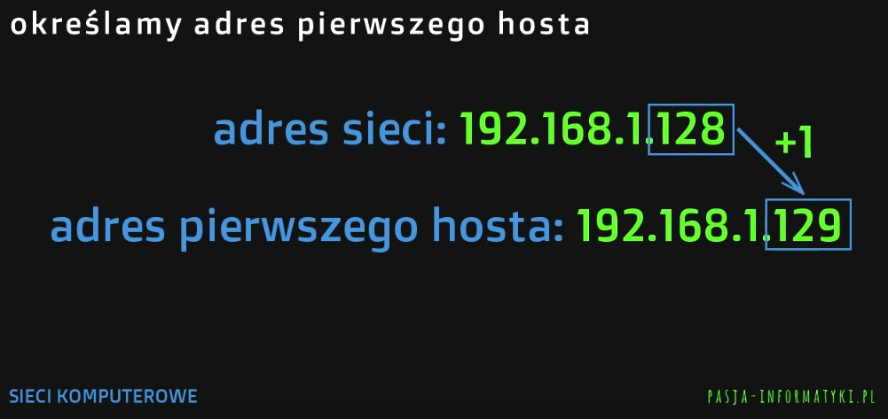
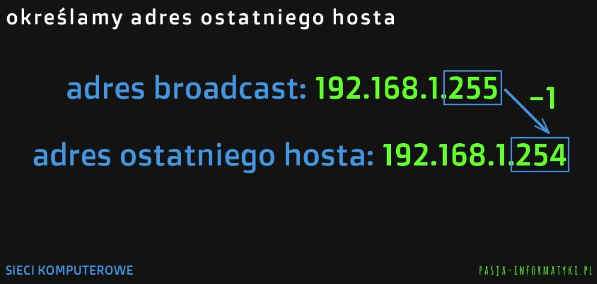
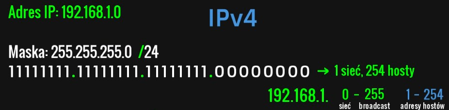
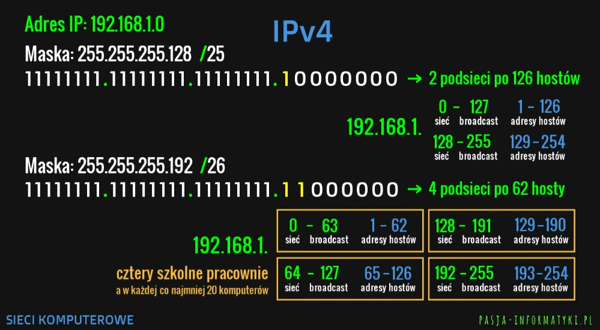
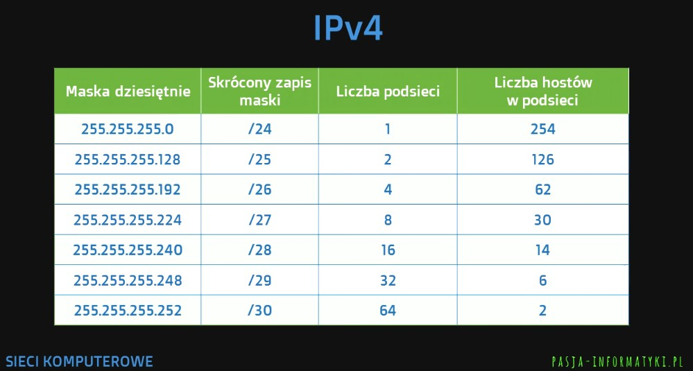
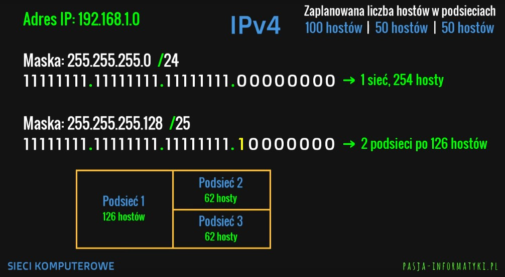
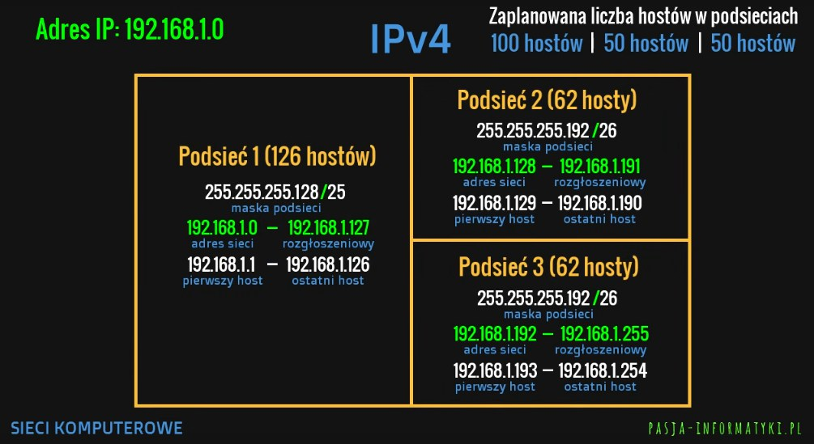

IPv4
Spis treści
- Co to jest adres IP?
- Struktura adresu IP
- Struktura maski podsieci
- Adresowanie
- Obliczanie na adresach
- Adres publiczny czy prywatny?
- Translacja NAT
- Maski podsieci
- Technika VLSM
Materiały dodatkowe
Co to jest adres IP?
Adres IP to adres interfejsu sieciowego, nie urządzenia.
Urządzenie może posiadać kilka interfejsów - np. serwer z dwiema kartami sieciowymi
Struktura adresu IP
Adres składa się z czterech oktetów
192.168.1.120
a każdy oktet może przyjąć wartość 0..255Adresy IPv4 składają się z 32 bitów!
Struktura maski podsieci
11111111111111111111111100000000
zapis binarny (dwójkowy)
255.255.255.0
zapis dziesiętny
/24
zapis skrócony = ilość jedynek w zapisie binarnym
(tutaj ammy 24 jedynki w dwójkowym zapisie maski)
Jedynki w zapisie dwójkowym oznaczają część sieciową,
a zera oznaczają część hostów
Maska musi rozpoczynać się od ciągu jedynek -
nie mogą zdarzyć sie zera pomiędzy jedynkami!
/24
zapis skrócony = ilość jedynek w zapisie binarnym(tutaj ammy 24 jedynki w dwójkowym zapisie maski)
Jedynki w zapisie dwójkowym oznaczają część sieciową,
a zera oznaczają część hostów
Maska musi rozpoczynać się od ciągu jedynek -
nie mogą zdarzyć sie zera pomiędzy jedynkami!
Adresowanie
adresowanie klasowe
z użyciem predefiniowanych klas A B C D Eadresowanie bezklasowe
z użyciem masek, które dzielą adresy na podsieciKlasy A B C + D E
A 0.0.0.0 - 127.255.255.255
B 128.0.0.0 - 191.255.255.255
C 192.0.0.0 - 223.255.255.255
D 224.0.0.0 - 239.255.255.255
adresy grupowe
E 240.0.0.0 - 255.255.255.255
adresy eksperymentalne
Obliczanie na adresach
192.168.1.145
255.255.255.128
zapis skrócony maski:/25
Musimy obliczyć:
- adres sieci (ang. network address)
- adres rozgłoszeniowy (ang. broadcast address)
- liczbę hostów (+ adres pierwszego i ostatniego)
Obliczamy adres sieci
Krok 1: Musimy zamienić adres IP i maske podsieci na system dwójkowy
Krok 2: Zapisujemy pod sobą adres IP i maske podsieci w systemie dwójkowym i przeprowadzamy operacje AND (iloczyn logiczny: przyjmuje wartość 1 tylko jeśli oba bity jednocześnie są jedynkami)
Krok 3: Uzyskaną liczbę binarną zamieniamy na system dziesiętny. Liczba ta po zamianie na system dziesiętny jest naszym obliczonym adresem sieci!

Obliczamy adres rozgłoszeniowy
Krok 1: Na masce podsieci zapisanej w systemie dwójkowym przeporwadzamy operacje NOT (zamieniamy zera na jedynki i jedynki na zera)
Krok 2: Zamieniamy uzyskaną liczbę na postać dziesiętną (oktet do oktetu)
Krok 3: Do uzyskanego adresu dodajemy adres sieci. Obliczony adres jest naszym adresem rozgłoszeniowym!

Obliczamy liczbę hostów
Do obliczania liczby hostów mamy dwa wzory:
2^(liczba bitów adresu IP - skrócony zapis maski) - 2
2^(liczba zer w dwójkowym zapisie maski podsieci) - 2
Określamy adres pierwszego hosta
By określic adres pierwszego hosta stosujemy wzór:
adres pierwszego hosta = adres sieci + 1
Określamy adres ostatniego hosta
By określic adres ostatniego hosta stosujemy wzór:
adres ostatniego hosta = adres rozgłoszeniowy - 1
Adres publiczny czy prywatny?
Adresy publiczne stosujemy w sieciach rozległych, zaś adresy prywatne w sieciach lokalnych
Translacje NAT
Adres publiczny otrzymujemy od naszego dostawcy internetu
ISP = Internet Service Provider
NAT
(ang. Network Address Translation)
Usługa NAT tłumaczy adresy prywatne na publiczne i odwrotnie. Dzięki temu urządzenia w sieci lokalnej mogą korzystać z internetu
Maski podsieci
192.168.1.0
255.255.255.0
zapis skrócony maski:/24
Polecenia ogólne:
- dobierz maskę podsieci, która pozwli podzielić aktualną sieć na X podsieci po Y hostów
- wyznacz adres podsieci (adres sieci) dla każdej podsieci
- podaj adresy rozgłoszeniowe każdej z podsieci
- określ możliwe adresy hostów w każdej z podsieci
W tym przypadku X = 4, a Y = 20
Krok 1: Zamieniamy maske podsieci na system dwójkowy
Krok 2: By podzielić sieć na podsieci zamieniamy zera od lewej strony na jedynki po czym zamieniamy adres podsieci na system dziesiętny
Każda dodatkowa jedynka w masce sprawia, że liczbę sieci mnożymy razy 2!
Wzór na liczbę podsieci:
2 ^ n
gdzie n to liczba "oddanych" bitów z części hosta do części sieciowej



Technika VLSM
VLSM
ang. Variable Length Subnet Mask - zmieniamy długość maski, tak aby uwzględnić zapotrzebowanie na liczbę hostów w podsieci
Technikę tą używamy by tworzyć nieparzystą ilość podsieci z różną ilością hostów
Krok 1: Zamieniamy maskę podsieci na system dwójkowy
Krok 2: Dzielimy sieć na parzystą ilość podsieci
Krok 3: Dzielimy jedną lub więcej podsieci na dwie lub więcej by otrzymać nieparzystą liczbę podsieci. Należy pamiętać o tym by dla podzielonej podsieci utworzyć nowy adres maski! 
